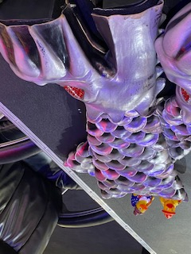
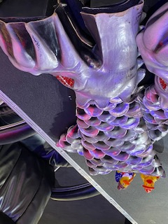
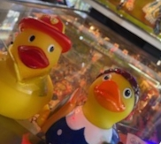
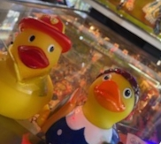
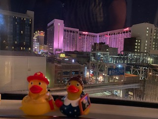
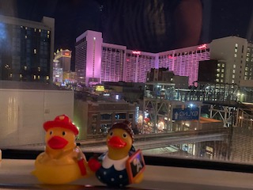
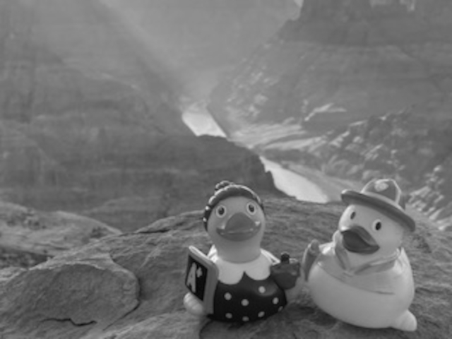
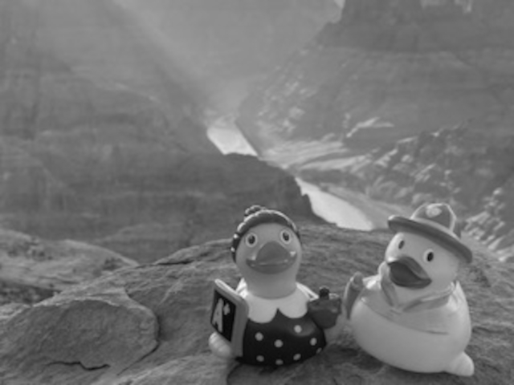
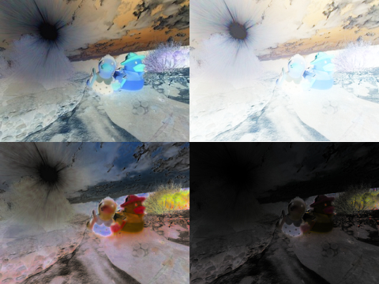
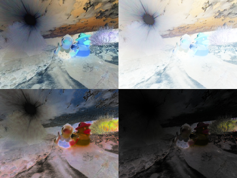

Editing Images
Ducks in Boots
 

Image rotated
Pinball Ducks
 

Image rotated and cropped, with canvas shrunk to fit
Ducks in Vegas
 

Image flipped on horizontal axis
Grand Canyon Ducks
 

Image scaled with color space changed to black and white
Light Ducks... of the Dark
 

Image shrunk, replicated, canvas scaled up, and each replication inverted with different inversions, the final being inverted with ALL the inversions